Häkeln lernen:
Die Basics für den Einstieg
Alles, was du wissen musst, bevor du mit deinem ersten Projekt startest – Material, Grundhaltung und die wichtigsten Maschen einfach erklärt.
Bevor du startest
Häkeln ist eine der entspanntesten Handarbeiten überhaupt – du brauchst nur eine Nadel, etwas Garn und ein bisschen Geduld. Am Anfang sieht die Maschenstruktur vielleicht noch verwirrend aus, aber mit ein paar Grundmaschen und etwas Übung entsteht schon nach kurzer Zeit dein erstes kleines Projekt.
Diese Seite begleitet dich Schritt für Schritt: von der richtigen Ausstattung über die Grundhaltung von Nadel und Garn bis zu den vier wichtigsten Maschen, die in fast jeder Anleitung vorkommen.
Lieber interaktiv? Im Lernpfad lernst du dieselben Grundlagen in sieben kurzen Lektionen mit Übungen und Mini-Quiz.
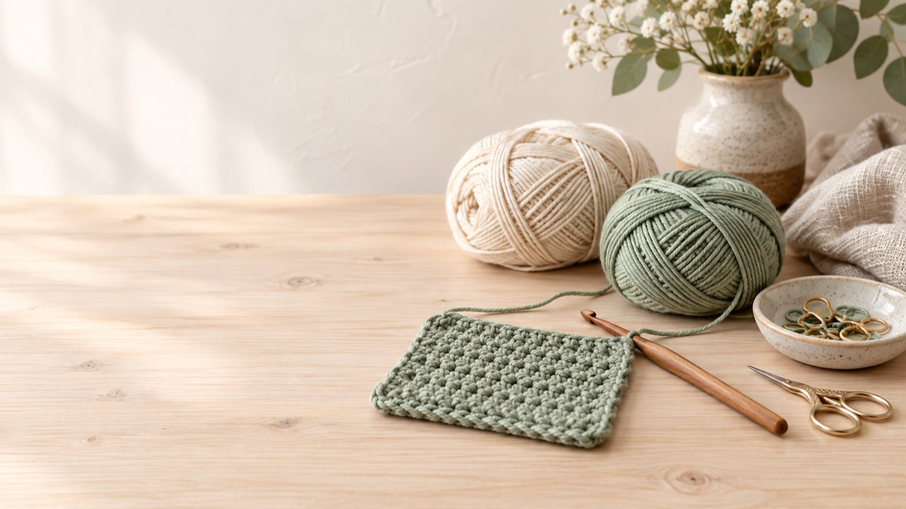
Das brauchst du zum Start
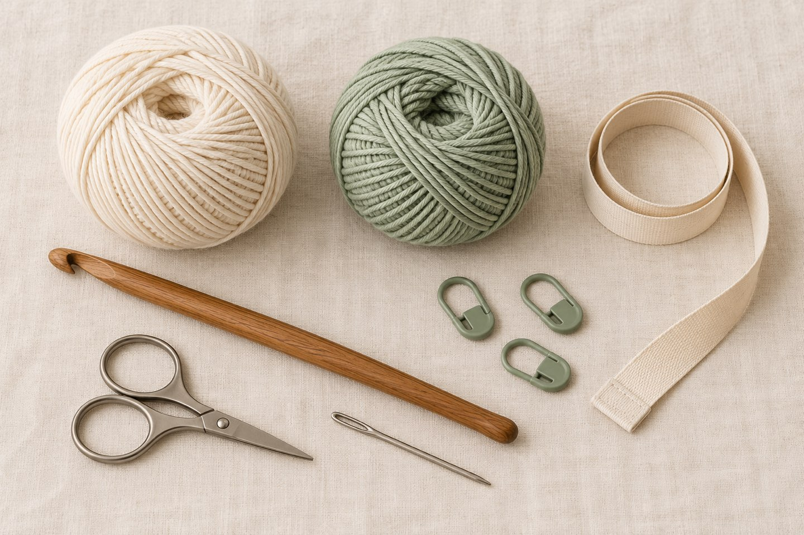
Häkelnadel
Für den Einstieg eignet sich eine mittlere Stärke, z. B. 4–5 mm, gut zu handhabendes Garn.
Garn
Glattes, helles Baumwoll- oder Acrylgarn ist anfangs leichter zu sehen als flauschiges Garn.
Schere
Eine kleine, scharfe Schere zum sauberen Abschneiden des Garns.
Maßband
Praktisch, um die Maschenprobe oder Projektgröße zu überprüfen.
Maschenmarkierer
Hilft dir, den Rundenanfang oder wichtige Stellen im Muster zu markieren.
Vernähnadel
Eine stumpfe Sticknadel mit großem Öhr zum Vernähen der Fäden am Ende.
Die richtige Grundhaltung
Nadel halten
Halte die Häkelnadel wie einen Stift zwischen Daumen und Zeigefinger, oder umfasse sie wie ein Messer – probiere aus, was sich für dich entspannter anfühlt.
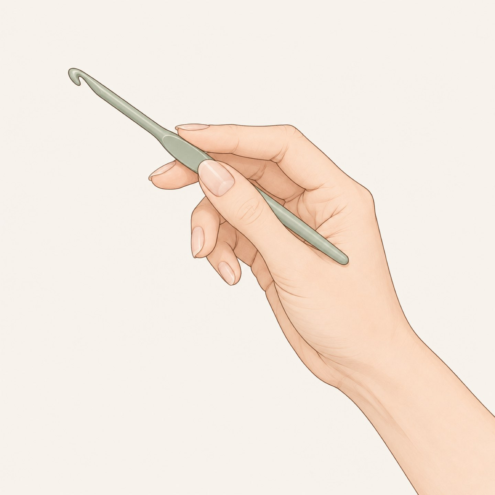
Garn führen
Leg das Garn über die Finger deiner anderen Hand, sodass du eine gleichmäßige Spannung erzeugen kannst. Zu locker rutscht das Garn, zu straff bremst es dich aus.
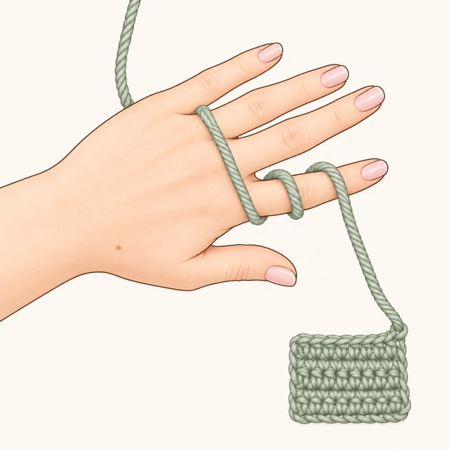
Entspannt sitzen
Setz dich bequem hin, die Arme locker angewinkelt. Verkrampfte Hände sind der häufigste Grund, warum Anfänger:innen schnell frustriert aufgeben.
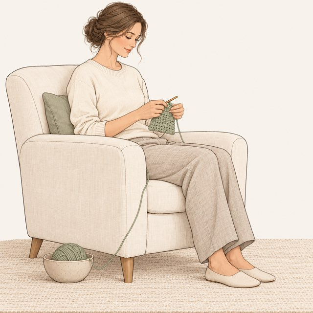
Übe an einem Probestück
Bevor du dein erstes richtiges Projekt startest, häkle ein paar Reihen zur Übung – ganz ohne Anspruch an das Ergebnis.
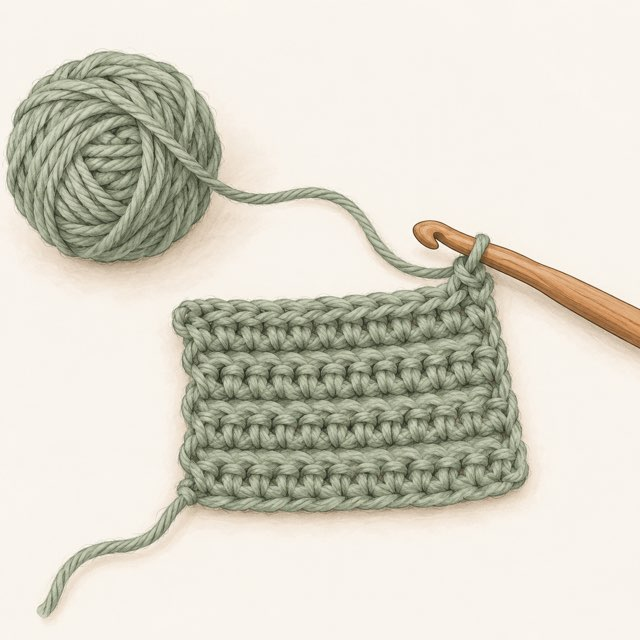
Die 4 Grundmaschen
Zuerst: Der Luftmaschenanschlag
Fast jede Häkelanleitung beginnt mit einer Grundkette aus Luftmaschen – dem sogenannten Anschlag. Er legt die spätere Breite deines Projekts fest und ist die Basis, in die du deine erste Reihe häkelst.
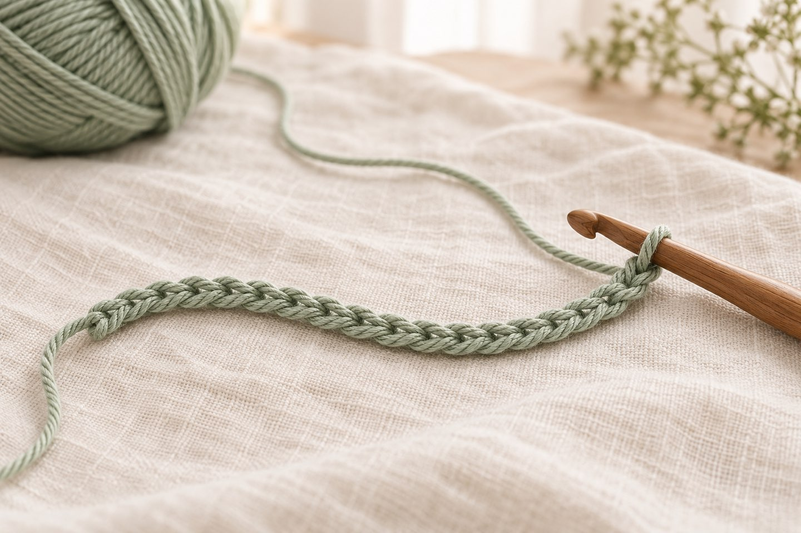
Anfangsschlinge machen
Wickle das Garn über Kreuz um deinen linken Zeige- und Mittelfinger, sodass eine Schlaufe entsteht. Führe die Nadel unter den hinteren Faden dieser Schlaufe und zieh ihn mit der Nadel hindurch – so entsteht ein kleiner Knoten, den du dann leicht auf der Nadel festziehst.
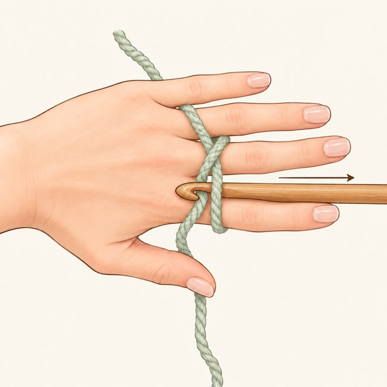
Umschlag
Leg das Arbeitsgarn einmal von hinten nach vorne über die Nadel – das ist der sogenannte Umschlag.
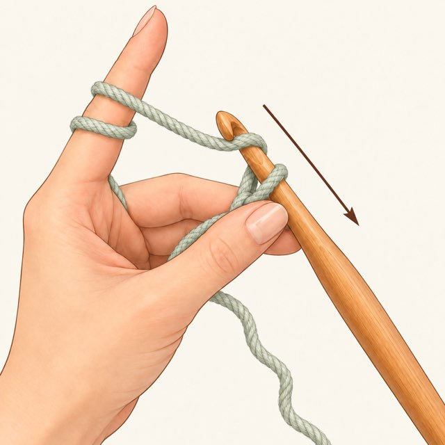
Durchziehen
Zieh den Umschlag mit der Nadel durch die Schlinge, die bereits auf der Nadel sitzt. Fertig ist deine erste Luftmasche.
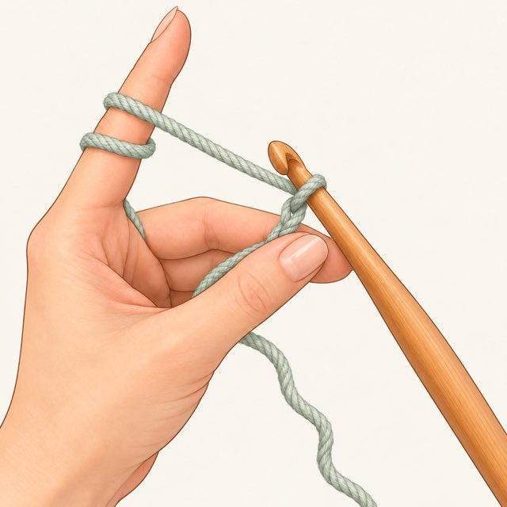
Kette fortsetzen
Wiederhole Umschlag und Durchziehen, bis deine Luftmaschenkette so lang ist, wie es die Anleitung vorgibt.
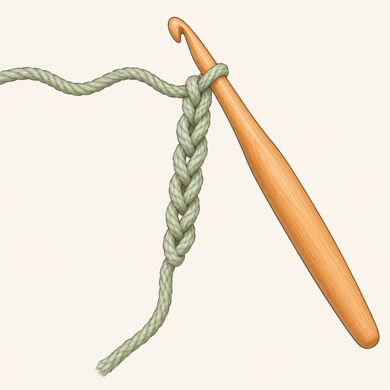
Maschen zählen
Zähl zur Kontrolle nach: Jede kleine V-Form in der Kette ist eine Luftmasche – die Schlinge direkt auf der Nadel zählt nicht mit.
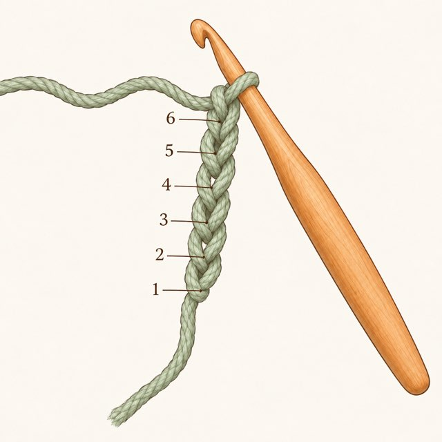
Tipp
Häkle die Anschlagkette etwas lockerer als den Rest deines Projekts – das macht es leichter, in der ersten Reihe wieder in die Maschen einzustechen.
Die 4 Grundmaschen im Überblick
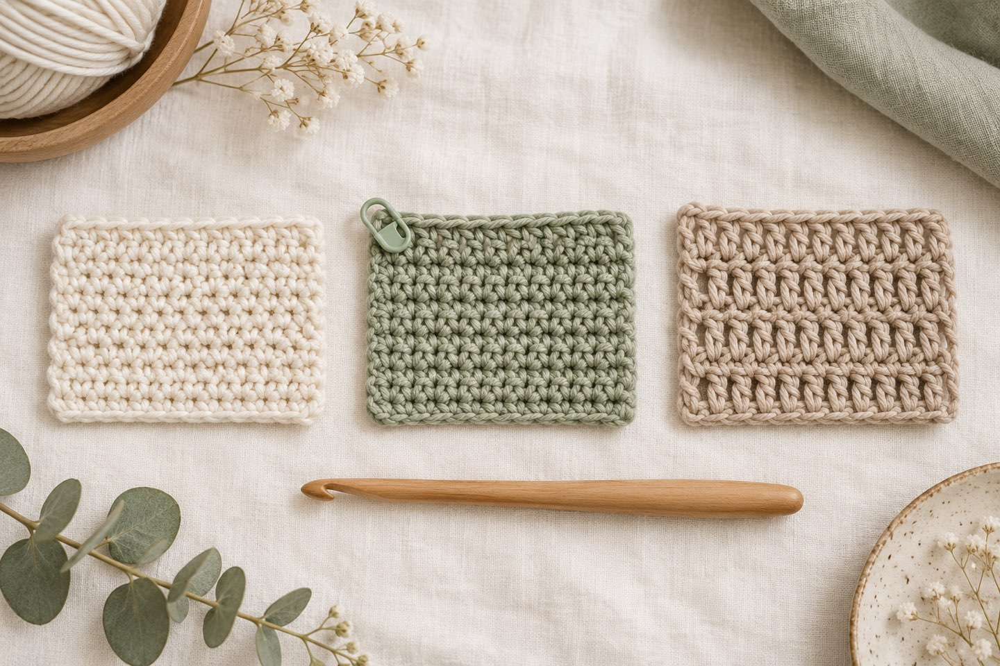
Luftmasche
Die Basis fast jeder Anleitung – damit beginnst du deine Grundkette.
- Schlinge das Garn um die Nadel
- Ziehe eine Schlaufe durch die vorherige Masche
- Wiederhole für die gewünschte Kettenlänge
Feste Masche
Die dichteste und stabilste Grundmasche – ideal für Amigurumi.
- Nadel in die Masche einstechen
- Garn holen und durchziehen (2 Schlaufen auf der Nadel)
- Erneut Garn holen und durch beide Schlaufen ziehen
Halbes Stäbchen
Etwas lockerer als die feste Masche, wächst schneller in die Höhe.
- Einmal Garn über die Nadel legen (Umschlag)
- In die Masche einstechen und Garn holen (3 Schlaufen)
- Garn holen, durch alle 3 Schlaufen ziehen
Stäbchen
Luftiger und höher – perfekt für Decken, Schals und Tücher.
- Umschlag, dann in die Masche einstechen
- Garn holen und durch 2 Schlaufen ziehen
- Garn erneut holen, durch die letzten 2 Schlaufen ziehen
Reihen häkeln & wenden
Sobald die Grundkette steht, arbeitest du Reihe für Reihe darüber. Der entscheidende Punkt dabei ist das Wenden – und die Wendeluftmaschen, die dafür sorgen, dass die neue Reihe die richtige Höhe bekommt.
In die richtige Masche einstechen
Von oben betrachtet bildet jede Masche ein kleines „V". Stich normalerweise unter beide Schenkel dieses V ein – so bleibt das Maschenbild geschlossen und gleichmäßig.
Reihe zu Ende arbeiten
Häkle bis in die letzte Masche der Vorreihe. Genau dort wird am häufigsten eine Masche vergessen – die Arbeit wird dann von Reihe zu Reihe schmaler.
Wendeluftmaschen häkeln
Bevor du wendest, brauchst du Höhe für die nächste Reihe: 1 Lm bei festen Maschen, 2 Lm beim halben Stäbchen, 3 Lm beim Stäbchen. Sie ersetzen je nach Maschenart die erste Masche der neuen Reihe.
Arbeit wenden
Dreh die Arbeit wie ein Buchblatt um – immer in dieselbe Richtung. So bleiben die Ränder gleichmäßig und du behältst die Übersicht, welche Seite gerade vorn liegt.
Ränder kontrollieren
Zähl am Ende jeder Reihe die Maschen. Bleibt die Zahl gleich, sind deine Ränder gerade. Nimmt sie zu oder ab, liegt es fast immer an der ersten oder letzten Masche.
Achtung
Hartnäckigster Anfängerfehler: versehentlich in die Wendeluftmaschen einstechen oder sie am Ende auslassen. Häkle die ersten Übungsstücke lieber mit festen Maschen – dort ist die Wendeluftmasche nur eine einzige und fällt weniger ins Gewicht.
In Runden häkeln
Nicht alles wird in Reihen gearbeitet. Taschen, Mützen, Körbe und alle Amigurumi entstehen in Runden – entweder spiralig oder mit geschlossenen Runden.
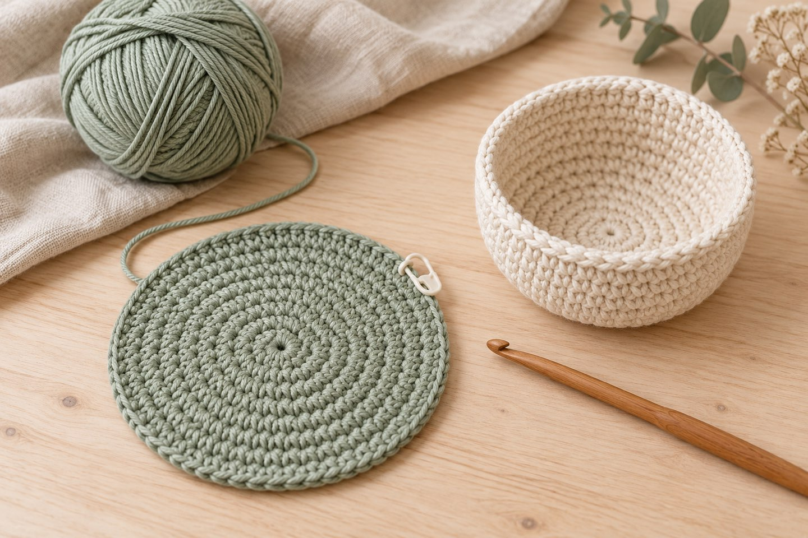
Der Magic Ring
Der Start fast jeder Runde-Arbeit: ein Fadenring, in den du die erste Runde häkelst und den du danach straff zuziehst – so bleibt kein Loch in der Mitte.
- Faden zu einer Schlaufe legen
- Erste Runde in die Schlaufe häkeln
- Am losen Fadenende zuziehen
Spiralrunden
Es wird ohne Rundenabschluss durchgehend weitergehäkelt. Typisch für Amigurumi, weil kein sichtbarer Übergang entsteht.
- Rundenanfang mit Markierer kennzeichnen
- Durchgehend weiterhäkeln
- Markierer bei jeder Runde versetzen
Geschlossene Runden
Jede Runde wird mit einer Kettmasche geschlossen und mit Luftmaschen neu begonnen. Ergibt eine sichtbare Naht, aber saubere Musterübergänge.
- Runde mit Km in die erste Masche schließen
- Mit Wendeluftmaschen neu beginnen
- Naht möglichst hinten platzieren
Zunehmen & Abnehmen
Über gezielte Zu- und Abnahmen entstehen runde und dreidimensionale Formen – vom flachen Untersetzer bis zum Amigurumi-Kopf.
- Zunahme: 2 Maschen in dieselbe Masche
- Abnahme: 2 Maschen zusammen abmaschen
- Gleichmäßig über die Runde verteilen
Faustregel
Bei flachen Kreisen kommen in jeder Runde so viele Zunahmen dazu, wie du in der ersten Runde Maschen hattest. Bei 6 Maschen zu Beginn also 6 Zunahmen pro Runde – dann bleibt die Scheibe flach.
Die Maschenprobe
Die Maschenprobe ist der langweiligste und gleichzeitig wichtigste Schritt jeder Anleitung. Sie entscheidet darüber, ob dein Projekt am Ende die angegebene Größe hat – denn jede Person häkelt unterschiedlich fest.
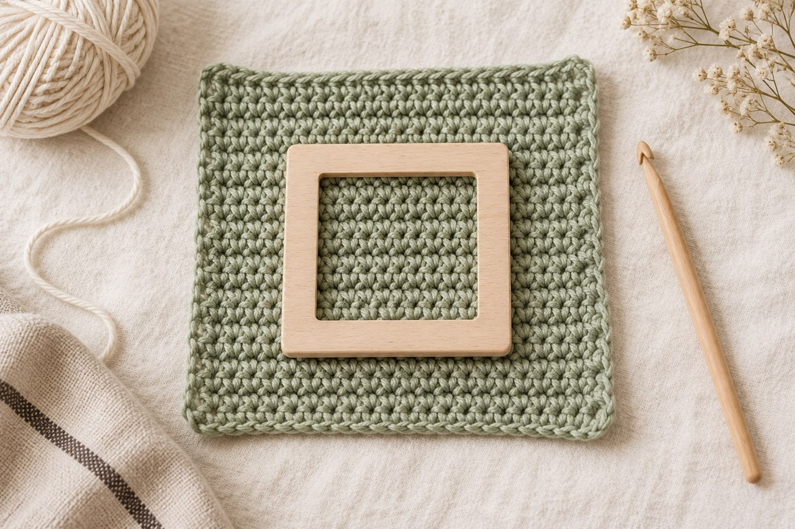
Probestück häkeln
Häkle ein Quadrat von etwa 15 × 15 cm in der Maschenart, die die Anleitung vorgibt – mit dem Garn und der Nadel, die du auch fürs Projekt verwenden willst.
10 × 10 cm ausmessen
Leg das Stück flach hin, ohne zu ziehen. Markiere ein Feld von 10 × 10 cm und zähle darin die Maschen in der Breite und die Reihen in der Höhe.
Mit der Anleitung vergleichen
Hast du mehr Maschen als angegeben, häkelst du zu fest – nimm eine größere Nadel. Hast du weniger, häkelst du zu locker – nimm eine kleinere.
Notieren
Schreib dir auf, welche Nadelstärke bei welchem Garn gepasst hat. Nach ein paar Projekten hast du deine persönliche Tabelle und sparst dir viele Proben.
Gut zu wissen
Bei Amigurumi kannst du die Maschenprobe meist überspringen – dort kommt es nicht auf die exakte Größe an, sondern nur darauf, dass die Maschen dicht genug sind, damit die Füllung nicht durchscheint.
Häkelschrift lesen
Viele Anleitungen zeigen das Muster nicht nur als Text, sondern auch als Diagramm aus Symbolen. Wenn du die wichtigsten Zeichen kennst, kannst du auf einen Blick erfassen, wie ein Muster aufgebaut ist.
Luftmasche
Ein kleiner Kreis oder ein Oval. Meist bilden sie die unterste Reihe eines Diagramms – die Grundkette.
Feste Masche
Ein Kreuz oder ein X. Je nach Quelle auch als kleines „t" ohne Querstrich dargestellt.
Halbes Stäbchen
Ein senkrechter Strich mit einem Querbalken oben. Je mehr Querstriche, desto höher die Masche.
Stäbchen
Senkrechter Strich mit einem Schrägstrich in der Mitte. Zwei Schrägstriche bedeuten Doppelstäbchen.
Lesehilfe
Diagramme werden von unten nach oben gelesen. In Reihen wechselt die Leserichtung mit jeder Reihe: ungerade Reihen von rechts nach links, gerade Reihen von links nach rechts. In Runden liest du von der Mitte nach außen. Ausprobieren kannst du das direkt im Muster-Generator. Alle Abkürzungen mit Symbolen und englischen Begriffen findest du in der Übersicht zu Abkürzungen & Häkelschrift.
Typische Anfängerfehler
Fast jede Schwierigkeit am Anfang lässt sich auf eine Handvoll Ursachen zurückführen. Hier sind die häufigsten – und was jeweils dagegen hilft.
Die Arbeit wird schmaler
Ursache: Die letzte Masche jeder Reihe wird übersehen. Lösung: Nach jeder Reihe zählen und die allerletzte Masche bewusst suchen – sie sitzt oft versteckt direkt neben der Wendeluftmasche.
Die Arbeit wird breiter
Ursache: Es wird zusätzlich in die Wendeluftmasche eingestochen. Lösung: Bei festen Maschen zählt die Wendeluftmasche nicht als Masche – häkle nicht hinein.
Der Kreis wellt sich
Ursache: Zu viele Zunahmen. Lösung: Eine Runde ohne Zunahmen einschieben oder die Anzahl pro Runde reduzieren.
Der Kreis wölbt sich zur Schale
Ursache: Zu wenige Zunahmen. Lösung: Zunahmen ergänzen – bei Amigurumi ist genau diese Wölbung allerdings gewollt.
Die Maschen sind ungleichmäßig
Ursache: Wechselnde Fadenspannung, oft durch Pausen. Lösung: Kommt mit der Übung von allein. Größere Abschnitte am Stück häkeln hilft zusätzlich.
Die Hand verkrampft
Ursache: Zu fester Griff, meist bei zu dünnem Garn. Lösung: Pausen machen, ergonomische Nadel ausprobieren und mit dickerem Garn üben.
Bist du startklar?
Wenn du diese sechs Punkte abhaken kannst, bist du bereit für dein erstes richtiges Projekt.
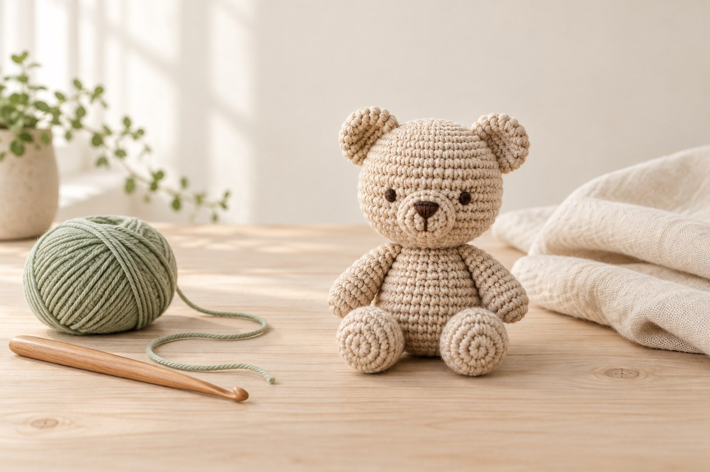
Anschlagkette
Du kannst eine Luftmaschenkette in gewünschter Länge häkeln und die Maschen darin zählen.
Grundmaschen
Feste Masche und Stäbchen gehen dir ohne Nachschlagen von der Hand.
Gerade Ränder
Dein Übungsquadrat hat über mehrere Reihen dieselbe Maschenzahl.
Magic Ring
Du bekommst einen Fadenring zu und kannst darin die erste Runde arbeiten.
Zu- und Abnehmen
Du weißt, wie du eine Masche verdoppelst und zwei Maschen zusammen abmaschst.
Vernähen
Du kannst Fadenenden mit der Vernähnadel unsichtbar im Maschenbild verstecken.
Meine Tipps für dich
Geduld mitbringen
Die ersten Maschen werden selten perfekt gleichmäßig – das ist völlig normal und gibt sich mit der Zeit.
Kleine Projekte zuerst
Starte mit einem Übungsquadrat oder einer kleinen Amigurumi-Figur statt direkt mit einer großen Decke.
Anleitungen zweimal lesen
Lies eine Anleitung einmal ganz durch, bevor du loshäkelst – so verstehst du den Aufbau besser.